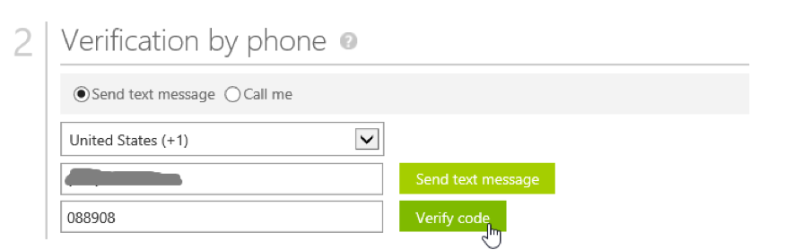
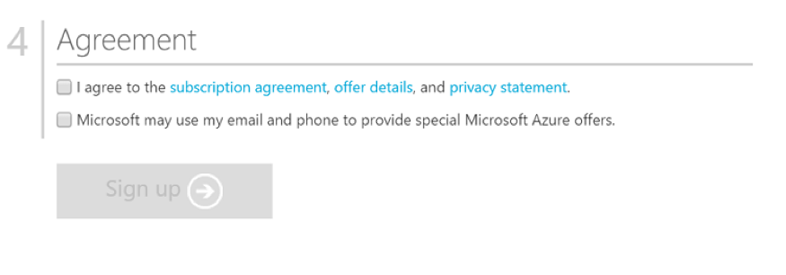

Introduction
Welcome to Global Azure Bootcamp 2018! All around the world user groups and communities want to learn about Azure and Cloud Computing! On April 22, 2017, all communities will come together once again in the fifth great Global Azure Bootcamp 2018 event! Each user group will organize their own one day deep dive class on Azure the way they see fit and how it works for their members. The result is that thousands of people get to learn about Azure and join together online under the social hashtag #GlobalAzure! Join hundreds of other organizers to help out and be part of the experience!
About the 2018 Louisville Global Azure Bootcamp
The 2018 Louisville Global Azure Bootcamp is a free one-day global training event on Azure, from the community to the community. See our event home page for more details.
This years format will be a blend of brief presentations, followed by hands-on and guided labs.
Our speakers include:
Getting Started
To get started you'll need the following pre-requisites. Please take a few moments to ensure everything is installed and configured.
- Microsoft Windows PC
- Visual Studio 2017 or later
- Azure Subscription (Trial is ok, or an Azure account linked to a Visual Studio subscription or MSDN account. See later sections of this chapter to create a free trial account or activate your Visual Studio subscription)
- Azure SDK for .NET installed (be sure to get the right one for your version of Visual Studio)
- Storage Explorer installed
- Storage Emulator installed
- The starter project on Github
What You're Building
Azure is big. Really big. Too big to talk about all things Azure in a single day.
We've assembled an exciting workshop to introduce you to several Azure services that cloud developers should know about:
- Web app
- Cognitive Services API for customized speech to text
- Cognitive Services API for Language Understanding (LUIS)
In this year’s Global Azure Bootcamp, you’ll learn how to integrate Azure’s customizable speech recognition, text analytics, and intent analysis APIs into an Azure-hosted app. You’ll start by learning about the Custom Speech Service, a speech recognition API that can be trained to filter out background noise and recognize obscure words and phrases. After training the speech recognition model, you’ll integrate it into an Azure-hosted web app to recognize real-time speech. Finally, you’ll integrate and train the Language Understanding and Intelligence Service (LUIS) to analyze the intent of speech phrases you generate. With the intent identified, your app will be able to respond in real time.
Key concepts and takeaways
- Navigating the Azure portal
- Using Azure Resource Groups to manage multiple Azure services
- Deploying a web app to Azure web app service
- Developing language and acoustic models for the Custom Speech Service
- Deploying a customized speech recognition API
- Developing intent models for the Language Understanding (LUIS) service
- Deploying a customized LUIS endpoint
- Integrating speech recognition and intent analysis into an application
Materials
You can find additional lab materials and presentation content at the locations below:
- Presentation: https://github.com/mikebranstein/global-azure-bootcamp-2018
- Source code for the code used in this guide: https://github.com/mikebranstein/global-azure-bootcamp-2018
- This guide: https://github.com/mikebranstein/global-azure-bootcamp-2018-instructions
Creating a Trial Azure Subscription
NOTE: If you have an Azure account already, you can skip this section. If you have a Visual Studio subscription (formerly known as an MSDN account), you get free Azure dollars every month. Check out the next section for activating these benefits.
There are several ways to get an Azure subscription, such as the free trial subscription, the pay-as-you-go subscription, which has no minimums or commitments and you can cancel any time; Enterprise agreement subscriptions, or you can buy one from a Microsoft retailer. In exercise, you'll create a free trial subscription.
Exercise: Create a Free Trial Subscription
Browse to the following page http://azure.microsoft.com/en-us/pricing/free-trial/ to obtain a free trial account.
Click Start free.
Enter the credentials for the Microsoft account that you want to use. You will be redirected to the Sign up page.
NOTE: Some of the following sections could be omitted in the Sign up process, if you recently verified your Microsoft account.
Enter your personal information in the About you section. If you have previously loaded this info in your Microsoft Account, it will be automatically populated.

In the Verify by phone section, enter your mobile phone number, and click Send text message.

When you receive the verification code, enter it in the corresponding box, and click Verify code.

After a few seconds, the Verification by card section will refresh. Fill in the Payment information form.
NOTE: Your credit card will not be billed, unless you remove the spending limits. If you run out of credit, your services will be shut down unless you choose to be billed.

In the Agreement section, check the I agree to the subscription Agreement, offer details, and privacy statement option, and click Sign up.
Your free subscription will be set up, and after a while, you can start using it. Notice that you will be informed when the subscription expires.

Your free trial will expire in 29 days from it's creation.

Activating Visual Studio Subscription Benefits
If you happen to be a Visual Studio subscriber (formerly known as MSDN) you can activate your Azure Visual Studio subscription benefits. It is no charge, you can use your MSDN software in the cloud, and most importantly you get up to $150 in Azure credits every month. You can also get 33% discount in Virtual Machines and much more.
Exercise: Activate Visual Studio Subscription Benefits
To active the Visual Studio subscription benefits, browse to the following URL: http://azure.microsoft.com/en-us/pricing/member-offers/msdn-benefits-details/
Scroll down to see the full list of benefits you will get for being a MSDN member. There is even a FAQ section you can read.
Click Activate to activate the benefits.

You will need to enter your Microsoft account credentials to verify the subscription and complete the activation steps.